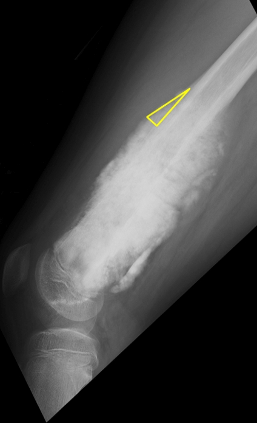
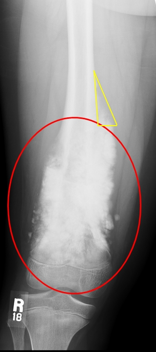

| PBL 1102 Patient Knee Radiographs |
|
|   | |
| A feature of these images is Codman triangle, shown in the yellow triangles.
Note also the osteoblastic (bone forming) mass, with destruction of normal tissue in the metaphysis. There is also extension of the mass into the extra-osseous soft tissue,
shown in the red ellipse.
|
|